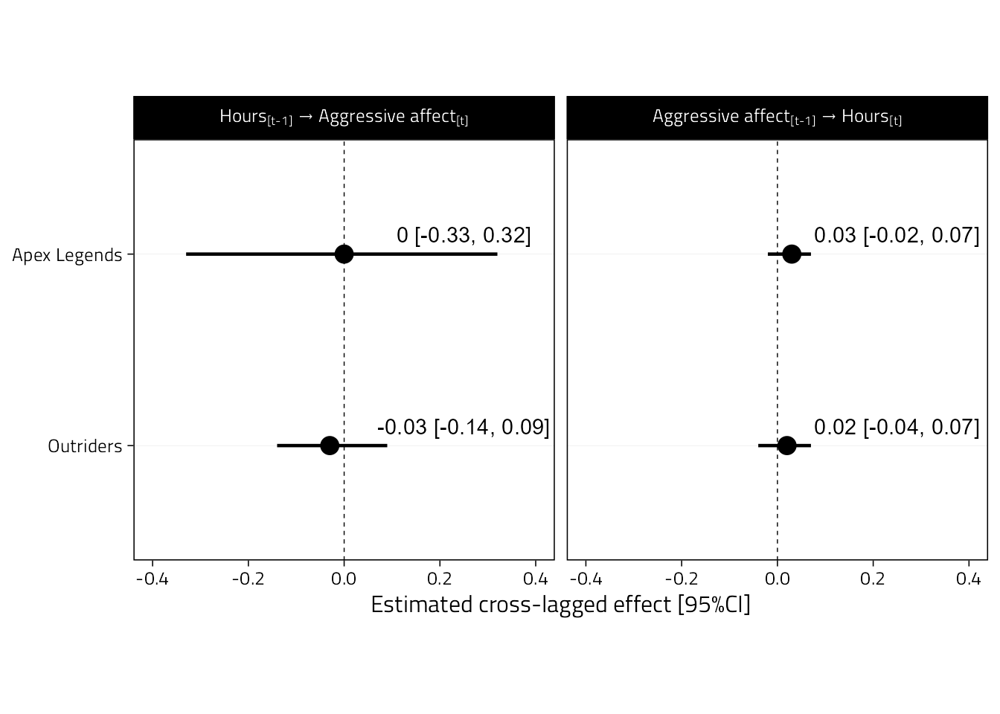

4 Analysis
library(lavaan)
library(tidyverse)
library(here)
library(ggplot2)
library(scales)
library(showtext)
library(ggstance)
library(extrafont)
library(kableExtra)Set figure options like before.
# Plotting options
Font <- "Titillium Web"
font_add_google(Font, Font)
theme_set(
theme_linedraw(
base_family = Font,
base_size = 12
) +
theme(
panel.grid.minor = element_blank(),
panel.grid.major.x = element_blank()
)
)
col1 <- "#2980b9"
col2 <- "#2980b9"Load the cleaned data set from the previous section.
data_path <- here("data", "cleaned_data.rds")
if (file.exists(data_path)) {
d <- read_rds(file = data_path)
} else {
stop(str_glue("{data_path} doesn't exist, run `01-process.Rmd` to create it."))
}4.1 Run model
The syntax for lavaan. Note that we constrain the cross-lagged effects to be the same, but within each game (so the effects can be different for the games). See explanation here: https://lavaan.ugent.be/tutorial/groups.html
riclpm_constrained <- [1058 chars quoted with '"']Transform the data to wide format for lavaan to take the arguments above.
d_riclpm <- d %>%
select(
Game, pid, wid,
Hours, Angry
) %>%
# Long format on anger (outcome)
pivot_longer(
Angry,
names_to = "y_var", values_to = "y"
) %>%
# Long format on hours (predictor)
pivot_longer(
Hours,
names_to = "x_var", values_to = "x"
) %>%
pivot_wider(
names_from = wid,
values_from = c(x,y),
names_sep = ""
)Fitting the model.
lavaan_fit <- lavaan(
riclpm_constrained,
data = d_riclpm,
missing = "ml",
meanstructure = TRUE,
int.ov.free = TRUE,
group = "Game"
)Inspecting summary.
summary(lavaan_fit)## lavaan 0.6-9 ended normally after 95 iterations
##
## Estimator ML
## Optimization method NLMINB
## Number of model parameters 52
## Number of equality constraints 8
##
## Number of observations per group:
## Apex Legends 1092
## Outriders 1488
## Number of missing patterns per group:
## Apex Legends 8
## Outriders 7
##
## Model Test User Model:
##
## Test statistic 55.775
## Degrees of freedom 10
## P-value (Chi-square) 0.000
## Test statistic for each group:
## Apex Legends 3.680
## Outriders 52.095
##
## Parameter Estimates:
##
## Standard errors Standard
## Information Observed
## Observed information based on Hessian
##
##
## Group 1 [Apex Legends]:
##
## Latent Variables:
## Estimate Std.Err z-value P(>|z|)
## RIx =~
## x1 1.000
## x2 1.000
## x3 1.000
## RIy =~
## y1 1.000
## y2 1.000
## y3 1.000
## wx1 =~
## x1 1.000
## wx2 =~
## x2 1.000
## wx3 =~
## x3 1.000
## wy1 =~
## y1 1.000
## wy2 =~
## y2 1.000
## wy3 =~
## y3 1.000
##
## Regressions:
## Estimate Std.Err z-value P(>|z|)
## wx2 ~
## wx1 (bxa) 0.457 0.053 8.677 0.000
## wy1 (gxa) 0.027 0.025 1.113 0.266
## wy2 ~
## wx1 (gya) -0.008 0.168 -0.048 0.961
## wy1 (bya) 0.040 0.128 0.310 0.756
## wx3 ~
## wx2 (bxa) 0.457 0.053 8.677 0.000
## wy2 (gxa) 0.027 0.025 1.113 0.266
## wy3 ~
## wx2 (gya) -0.008 0.168 -0.048 0.961
## wy2 (bya) 0.040 0.128 0.310 0.756
##
## Covariances:
## Estimate Std.Err z-value P(>|z|)
## wx1 ~~
## wy1 0.052 0.045 1.158 0.247
## .wx2 ~~
## .wy2 0.018 0.046 0.396 0.692
## .wx3 ~~
## .wy3 0.048 0.040 1.209 0.227
## RIx ~~
## RIy 0.011 0.048 0.232 0.816
##
## Intercepts:
## Estimate Std.Err z-value P(>|z|)
## .x1 0.765 0.025 30.549 0.000
## .x2 0.671 0.026 26.141 0.000
## .x3 0.670 0.025 26.777 0.000
## .y1 3.422 0.048 71.715 0.000
## .y2 3.237 0.069 46.638 0.000
## .y3 3.235 0.092 35.062 0.000
## RIx 0.000
## RIy 0.000
## wx1 0.000
## .wx2 0.000
## .wx3 0.000
## wy1 0.000
## .wy2 0.000
## .wy3 0.000
##
## Variances:
## Estimate Std.Err z-value P(>|z|)
## RIx 0.386 0.035 11.145 0.000
## RIy 1.300 0.155 8.388 0.000
## wx1 0.298 0.030 10.030 0.000
## wy1 1.124 0.150 7.509 0.000
## .wx2 0.269 0.017 15.519 0.000
## .wy2 1.028 0.186 5.522 0.000
## .wx3 0.226 0.013 16.995 0.000
## .wy3 1.107 0.151 7.318 0.000
## .x1 0.000
## .x2 0.000
## .x3 0.000
## .y1 0.000
## .y2 0.000
## .y3 0.000
##
##
## Group 2 [Outriders]:
##
## Latent Variables:
## Estimate Std.Err z-value P(>|z|)
## RIx =~
## x1 1.000
## x2 1.000
## x3 1.000
## RIy =~
## y1 1.000
## y2 1.000
## y3 1.000
## wx1 =~
## x1 1.000
## wx2 =~
## x2 1.000
## wx3 =~
## x3 1.000
## wy1 =~
## y1 1.000
## wy2 =~
## y2 1.000
## wy3 =~
## y3 1.000
##
## Regressions:
## Estimate Std.Err z-value P(>|z|)
## wx2 ~
## wx1 (bxo) 0.553 0.042 13.091 0.000
## wy1 (gxo) 0.016 0.027 0.609 0.543
## wy2 ~
## wx1 (gyo) -0.024 0.059 -0.414 0.679
## wy1 (byo) 0.025 0.115 0.220 0.826
## wx3 ~
## wx2 (bxo) 0.553 0.042 13.091 0.000
## wy2 (gxo) 0.016 0.027 0.609 0.543
## wy3 ~
## wx2 (gyo) -0.024 0.059 -0.414 0.679
## wy2 (byo) 0.025 0.115 0.220 0.826
##
## Covariances:
## Estimate Std.Err z-value P(>|z|)
## wx1 ~~
## wy1 0.078 0.075 1.043 0.297
## .wx2 ~~
## .wy2 -0.034 0.040 -0.840 0.401
## .wx3 ~~
## .wy3 0.029 0.028 1.038 0.299
## RIx ~~
## RIy -0.042 0.050 -0.838 0.402
##
## Intercepts:
## Estimate Std.Err z-value P(>|z|)
## .x1 0.666 0.030 22.512 0.000
## .x2 0.373 0.023 16.503 0.000
## .x3 0.207 0.017 12.372 0.000
## .y1 2.831 0.037 76.839 0.000
## .y2 2.838 0.059 47.900 0.000
## .y3 2.782 0.065 42.942 0.000
## RIx 0.000
## RIy 0.000
## wx1 0.000
## .wx2 0.000
## .wx3 0.000
## wy1 0.000
## .wy2 0.000
## .wy3 0.000
##
## Variances:
## Estimate Std.Err z-value P(>|z|)
## RIx -0.179 0.108 -1.659 0.097
## RIy 0.918 0.102 8.963 0.000
## wx1 1.483 0.140 10.570 0.000
## wy1 1.097 0.099 11.081 0.000
## .wx2 0.485 0.021 23.505 0.000
## .wy2 0.750 0.167 4.491 0.000
## .wx3 0.310 0.026 11.985 0.000
## .wy3 0.937 0.100 9.368 0.000
## .x1 0.000
## .x2 0.000
## .x3 0.000
## .y1 0.000
## .y2 0.000
## .y3 0.000Get parameter estimates for plot. Note: The standardized estimates aren’t the same across waves because we didn’t put equality constraints on the variances – only the unstandardized ones are identical.
params <-
bind_rows(
parameterestimates(lavaan_fit) %>%
mutate(Type = "Unstandardized"),
standardizedsolution(lavaan_fit) %>%
rename(est = est.std) %>%
mutate(Type = "Standardized")
) %>%
as_tibble() %>%
rename(Game = group) %>%
mutate(
Game = factor(if_else(Game == 1, "Apex Legends", "Outriders"))
) %>%
mutate(
label = if_else(lhs == "RIx" & rhs == "RIy", "Covariance", label)
) %>%
mutate(
Outcome = case_when(
str_starts(lhs, "wx") ~ "Hours",
str_starts(lhs, "wy") ~ "Angry",
TRUE ~ NA_character_
),
Predictor = case_when(
str_starts(rhs, "wx") ~ "Hours",
str_starts(rhs, "wy") ~ "Angry",
TRUE ~ NA_character_
)
) %>%
mutate(
`Parameter type` = case_when(
lhs == "RIx" & rhs == "RIy" ~ "Covariance",
Predictor == Outcome ~ "Autoregression",
Predictor != Outcome ~ "Cross-lagged",
TRUE ~ NA_character_
)
) %>%
mutate(
Direction = case_when(
`Parameter type` == "Cross-lagged" ~ str_glue('{Predictor}[plain("[t-1]")]%->%{Outcome}[plain("[t]")]'),
TRUE ~ NA_character_
),
Direction = as.factor(Direction)
) %>%
filter(!label == "") %>%
mutate(
across(
c(est, ci.lower, ci.upper),
~ round(.x, digits = 2)
)
) %>%
select(
Predictor,
Outcome,
`Parameter type`,
Direction,
Type,
Game,
Estimate = est,
`Lower CI` = ci.lower,
`Upper CI` = ci.upper
) %>%
distinct() %>%
mutate(
across(
c(Predictor, Outcome, Direction),
~ as.factor(str_replace(.x, "Angry", "`Aggressive affect`")) # for labelling figure
)
)
params %>%
select(-Direction) %>%
mutate( # temporarily remove backticks (purely cosmetic, for table below)
across(
c(Predictor, Outcome),
~ str_replace(.x, "`Aggressive affect`", "Aggressive affect") # for labelling figure
)
) %>%
kbl(caption = "Parameter from RICLPM") %>%
kable_styling(full_width = FALSE, font_size = 12) | Predictor | Outcome | Parameter type | Type | Game | Estimate | Lower CI | Upper CI |
|---|---|---|---|---|---|---|---|
| Hours | Hours | Autoregression | Unstandardized | Apex Legends | 0.46 | 0.35 | 0.56 |
| Aggressive affect | Hours | Cross-lagged | Unstandardized | Apex Legends | 0.03 | -0.02 | 0.08 |
| Hours | Aggressive affect | Cross-lagged | Unstandardized | Apex Legends | -0.01 | -0.34 | 0.32 |
| Aggressive affect | Aggressive affect | Autoregression | Unstandardized | Apex Legends | 0.04 | -0.21 | 0.29 |
| NA | NA | Covariance | Unstandardized | Apex Legends | 0.01 | -0.08 | 0.10 |
| Hours | Hours | Autoregression | Unstandardized | Outriders | 0.55 | 0.47 | 0.64 |
| Aggressive affect | Hours | Cross-lagged | Unstandardized | Outriders | 0.02 | -0.04 | 0.07 |
| Hours | Aggressive affect | Cross-lagged | Unstandardized | Outriders | -0.02 | -0.14 | 0.09 |
| Aggressive affect | Aggressive affect | Autoregression | Unstandardized | Outriders | 0.03 | -0.20 | 0.25 |
| NA | NA | Covariance | Unstandardized | Outriders | -0.04 | -0.14 | 0.06 |
| Hours | Hours | Autoregression | Standardized | Apex Legends | 0.43 | 0.34 | 0.52 |
| Aggressive affect | Hours | Cross-lagged | Standardized | Apex Legends | 0.05 | -0.04 | 0.14 |
| Hours | Aggressive affect | Cross-lagged | Standardized | Apex Legends | 0.00 | -0.18 | 0.17 |
| Aggressive affect | Aggressive affect | Autoregression | Standardized | Apex Legends | 0.04 | -0.22 | 0.30 |
| Hours | Hours | Autoregression | Standardized | Apex Legends | 0.48 | 0.38 | 0.59 |
| Hours | Aggressive affect | Cross-lagged | Standardized | Apex Legends | 0.00 | -0.18 | 0.18 |
| Aggressive affect | Aggressive affect | Autoregression | Standardized | Apex Legends | 0.04 | -0.21 | 0.28 |
| NA | NA | Covariance | Standardized | Apex Legends | 0.02 | -0.12 | 0.15 |
| Hours | Hours | Autoregression | Standardized | Outriders | 0.69 | 0.62 | 0.77 |
| Aggressive affect | Hours | Cross-lagged | Standardized | Outriders | 0.02 | -0.04 | 0.08 |
| Hours | Aggressive affect | Cross-lagged | Standardized | Outriders | -0.03 | -0.20 | 0.13 |
| Aggressive affect | Aggressive affect | Autoregression | Standardized | Outriders | 0.03 | -0.24 | 0.30 |
| Hours | Aggressive affect | Cross-lagged | Standardized | Outriders | -0.02 | -0.14 | 0.09 |
| Aggressive affect | Aggressive affect | Autoregression | Standardized | Outriders | 0.02 | -0.18 | 0.23 |
| NA | NA | Covariance | Standardized | Outriders | -0.10 | -0.35 | 0.14 |
4.2 Figure 4
Then a forest plot of the unstandardized cross-lagged effects.
text_estimates <-
params %>%
filter(Type == "Unstandardized", `Parameter type` == "Cross-lagged") %>%
mutate(
label = str_glue("{Estimate} [{`Lower CI`}, {`Upper CI`}]"),
x = rep(0.25, 4),
y = c(rep(2.1, 2), rep(1.1, 2))
)
params %>%
filter(Type == "Unstandardized", `Parameter type` == "Cross-lagged") %>%
mutate(
Direction = fct_rev(Direction), # not in alphabetical order
Game = fct_rev(Game),
estimate_text = str_glue("{Estimate} [{`Lower CI`}, {`Upper CI`}]")
) %>%
ggplot(aes(Estimate, Game)) +
geom_vline(xintercept = 0, lty = 2, size = .25) +
geom_pointrange(
aes(xmin = `Lower CI`, xmax = `Upper CI`),
size = 0.8
) +
scale_x_continuous(
breaks = pretty_breaks()
) +
xlab("Estimated cross-lagged effect [95%CI]") +
xlim(-0.4, 0.4) +
facet_wrap(
~ Direction,
labeller = labeller(.rows = label_parsed)
) +
geom_text(
data = text_estimates,
mapping = aes(x = x, y = y, label = label)
) +
theme(
aspect.ratio = 1,
axis.title.y = element_blank(),
panel.grid.major.y = element_line(color = "lightgrey"),
)